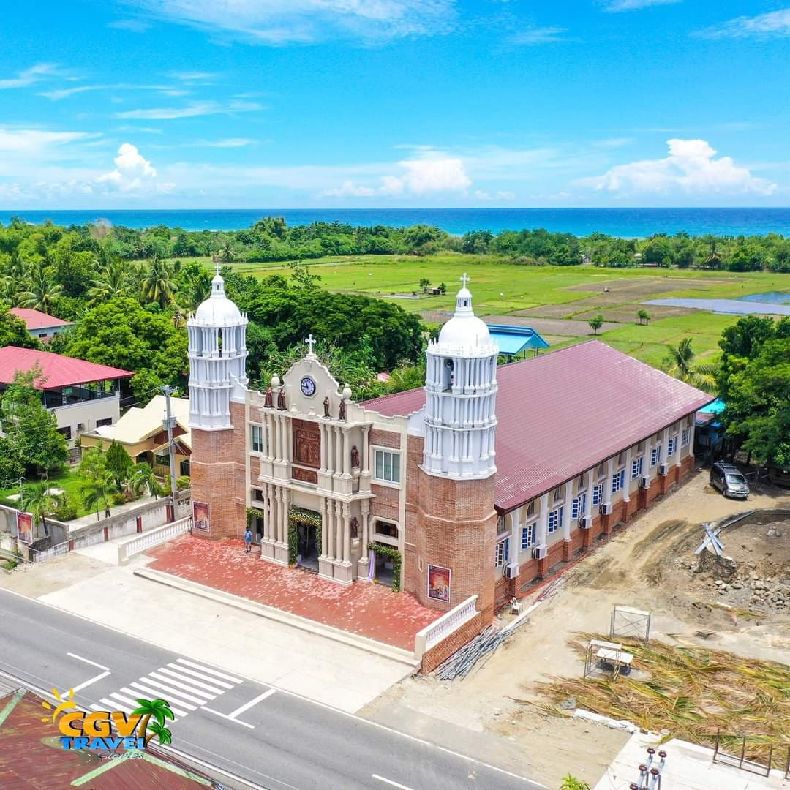
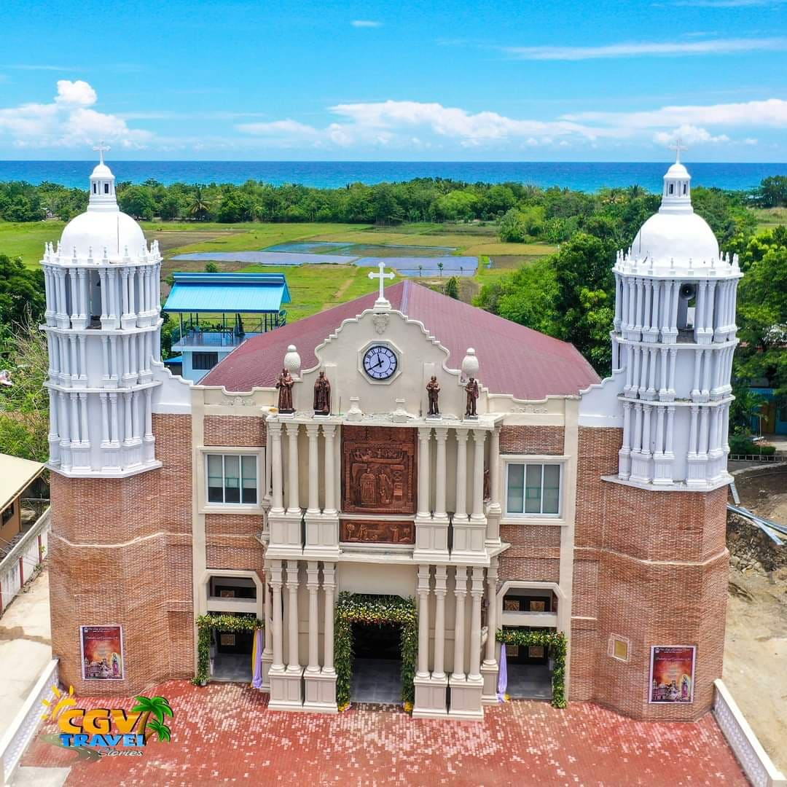
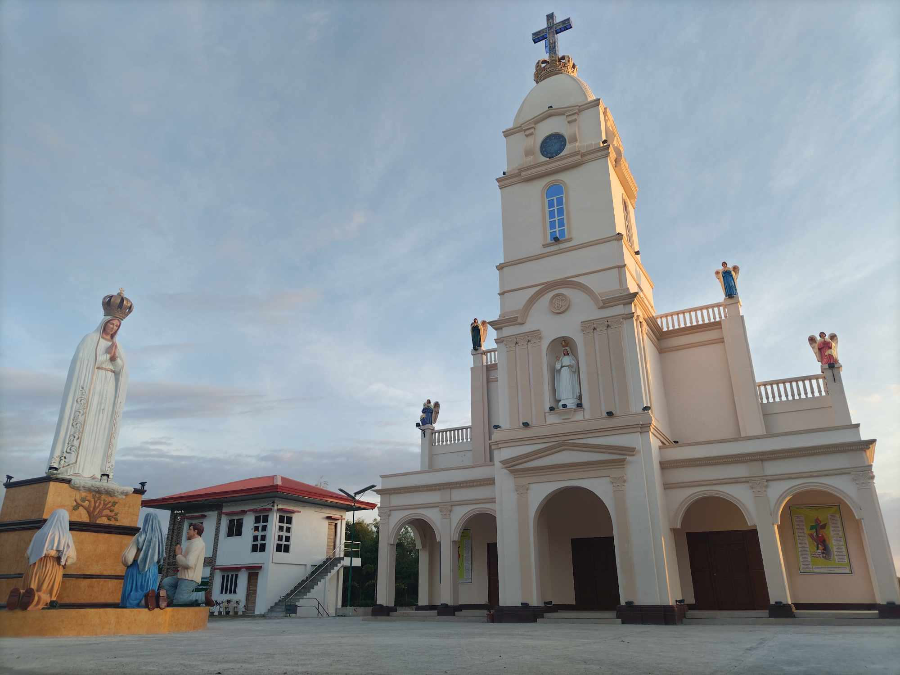
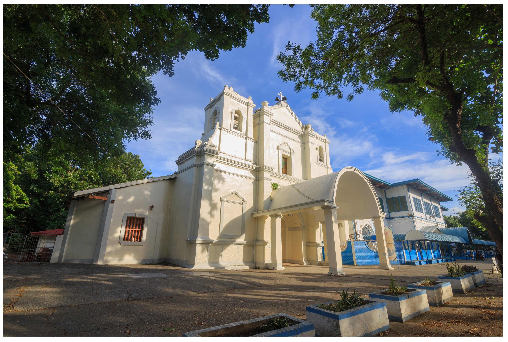
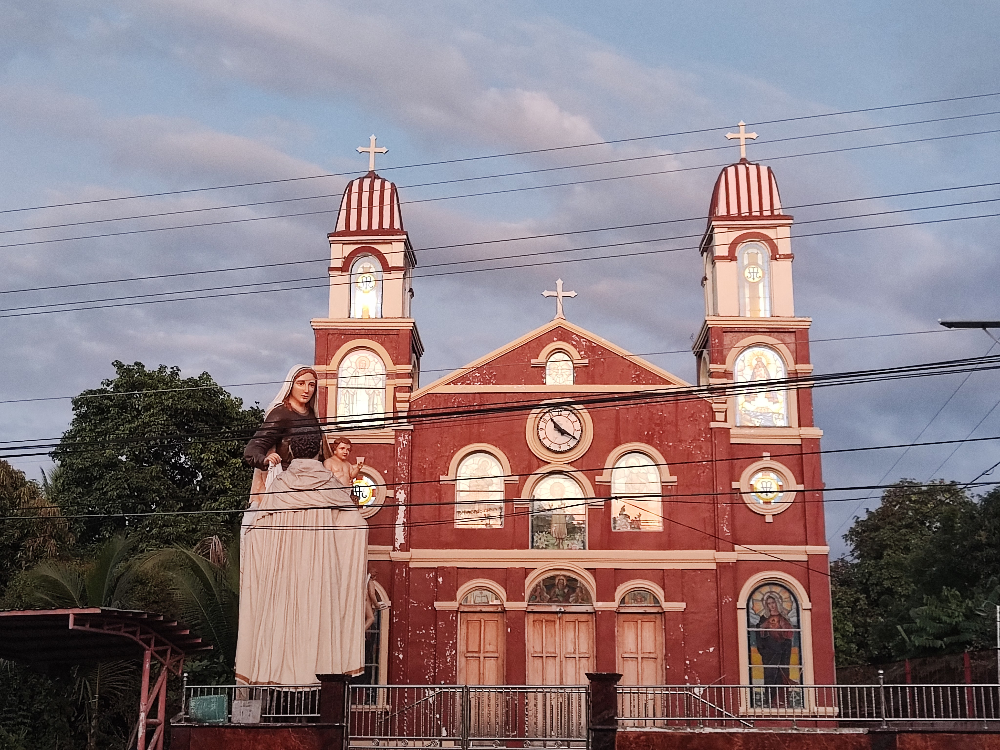

The second southernmost town of the province of Laguna and in the Philippines, Santa Cruz has a diverse, beautiful past. It is known as the strong Spanish colonial practice...


Our Lady Of Guadalupe

Our Lady Of Fatima

Our Lady Of Immaculate Conception

Our Lady Of Mt. Carmel
×
Churches
Click Your Desired Destination For Directions and Map